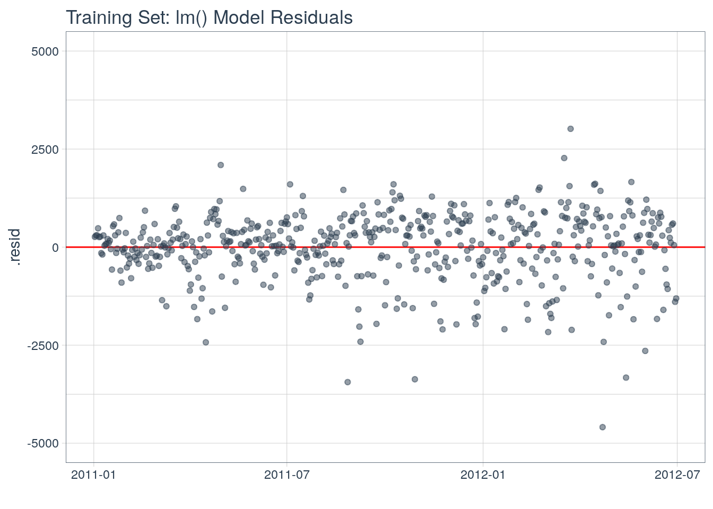

library(timetk)library(tidyverse)library(lubridate)library(tidyquant)bikes <-read_csv("data/day.csv")# Select date and countbikes <- bikes %>%select(dteday, cnt) %>%rename(date = dteday)bikes %>% head
library(broom)fit_lm <-lm(cnt ~ ., data = train_augmented)fit_lm %>% summary
Call:
lm(formula = cnt ~ ., data = train_augmented)
Residuals:
Min 1Q Median 3Q Max
-4511.2 -358.2 100.1 545.7 3018.9
Coefficients: (16 not defined because of singularities)
Estimate Std. Error t value Pr(>|t|)
(Intercept) 3.054e+08 1.572e+08 1.944 0.052477 .
date 4.299e+02 2.182e+02 1.971 0.049312 *
index.num NA NA NA NA
diff NA NA NA NA
year -1.556e+05 7.977e+04 -1.951 0.051611 .
year.iso 5.045e+02 6.501e+02 0.776 0.438092
half 1.947e+03 7.885e+02 2.470 0.013851 *
quarter 8.368e+04 2.515e+04 3.327 0.000941 ***
month -4.019e+04 8.555e+03 -4.698 3.37e-06 ***
month.xts NA NA NA NA
month.lbl.L NA NA NA NA
month.lbl.Q -3.821e+03 2.873e+02 -13.299 < 2e-16 ***
month.lbl.C 2.035e+03 5.761e+02 3.533 0.000447 ***
month.lbl^4 4.329e+02 1.645e+02 2.632 0.008754 **
month.lbl^5 -1.837e+03 5.148e+02 -3.568 0.000393 ***
month.lbl^6 4.286e+02 2.091e+02 2.050 0.040874 *
month.lbl^7 -1.705e+01 2.533e+02 -0.067 0.946379
month.lbl^8 1.442e+03 3.620e+02 3.983 7.77e-05 ***
month.lbl^9 NA NA NA NA
month.lbl^10 1.058e+03 2.374e+02 4.456 1.03e-05 ***
month.lbl^11 NA NA NA NA
day -1.360e+03 2.784e+02 -4.886 1.38e-06 ***
hour NA NA NA NA
minute NA NA NA NA
second NA NA NA NA
hour12 NA NA NA NA
am.pm NA NA NA NA
wday 3.785e+01 2.723e+01 1.390 0.165092
wday.xts NA NA NA NA
wday.lbl.L NA NA NA NA
wday.lbl.Q 2.572e+02 1.968e+02 1.306 0.191976
wday.lbl.C -1.353e+02 1.649e+02 -0.820 0.412367
wday.lbl^4 9.018e+01 1.266e+02 0.713 0.476409
wday.lbl^5 -8.108e+01 1.061e+02 -0.764 0.444973
wday.lbl^6 1.682e+02 1.007e+02 1.671 0.095297 .
mday NA NA NA NA
qday 9.277e+02 2.766e+02 3.353 0.000857 ***
yday NA NA NA NA
mweek 3.838e+02 2.768e+02 1.387 0.166124
week -2.162e+02 2.301e+02 -0.940 0.347856
week.iso NA NA NA NA
week2 6.469e+01 8.463e+01 0.764 0.444935
week3 2.367e+01 4.756e+01 0.498 0.618948
week4 -4.816e+00 3.845e+01 -0.125 0.900387
mday7 -1.355e+02 1.365e+02 -0.993 0.321347
---
Signif. codes: 0 '***' 0.001 '**' 0.01 '*' 0.05 '.' 0.1 ' ' 1
Residual standard error: 884.1 on 517 degrees of freedom
(1 observation deleted due to missingness)
Multiple R-squared: 0.7459, Adjusted R-squared: 0.7322
F-statistic: 54.21 on 28 and 517 DF, p-value: < 2.2e-16
fit_lm %>%augment() %>%ggplot(aes(x = date, y = .resid)) +geom_hline(yintercept =0, color ="red") +geom_point(color =palette_light()[[1]], alpha =0.5) +theme_tq() +labs(title ="Training Set: lm() Model Residuals", x ="") +scale_y_continuous(limits =c(-5000, 5000))

Tạo dữ liệu test
test_augmented <- test %>%tk_augment_timeseries_signature()test_augmented